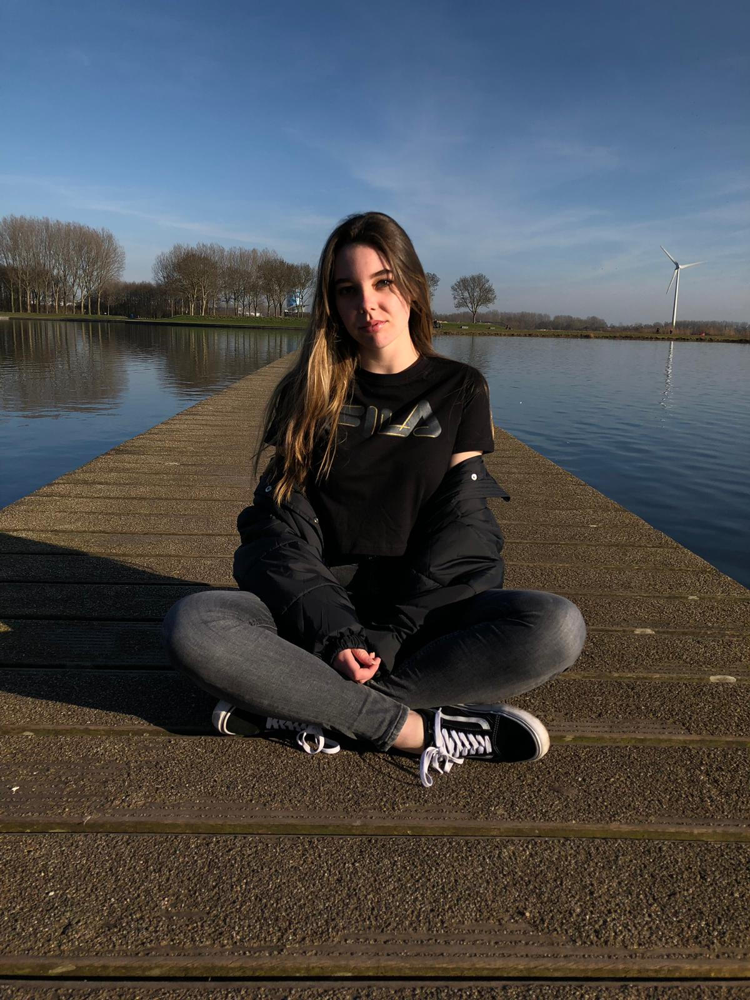

About me
I am a 2nd year in Communication and Multimedia design at the Hogeschool van Amsterdam (HvA). My hobbies are drawing, creating creative products, designing, gaming and recently also coding. Since I started my studies at the HvA I have had a passion for coding and building websites. I am eager to learn a lot too, such as backend. Right now I am focussing on improving my HTML/CSS and JavaScript skills and looking for an internship.
Download my CVI have experience in catering and teaching assistant work. I also have skills in adobe programs such as: Illustrator, Photoshop, Adobe XD and Premiere Pro. I see myself as a flexible person with many interests in the creative sector. I also often create drawings, traditional and digital. You can check out a selection of my drawings on deviantart by clicking here!
Interested to see my work? Scroll down! ↓ My Projects
Frontend Development
Rebuild a Website
During this school project I had to copy an existing website and to recreate the underlying code myself. I chose the website Sennep.com, because I thought it was a solid looking website and a good challenge for me. I didn't have a lot of experience with JavaScript when I started making it, so I still had a lot to learn. I am really proud of what I made, because it is my first responsive website. I scored full marks for this project.
Check out the website ↗Introduction Programming
Making a JavaScript game
This is a school project I started during the course Introduction Programming in my first year of Communication & Multimedia Design. This game is called "galgje" created with HTML/CSS and JavaScript. It works best on a desktop, because I didn't have any experience in responsive design at the time. I am really proud of this work because it was my first time using JavaScript. All you see on this website is selfmade.
Check out the website ↗Hobby
Starting My Own Shop
I recently opened an online shop at Etsy.com. I am currently selling pixel art emotes, but I am planning on making templates that can be used on Twitch. I make the pixel art with pixilart.com and I am planning on designing the templates with illustrator or other adobe programs aswell.
Check out my shop ↗copyright © 2021 Samantha van Zandwijk